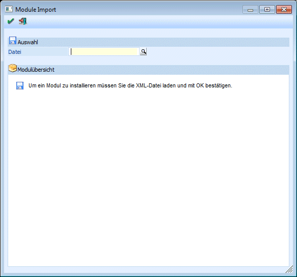
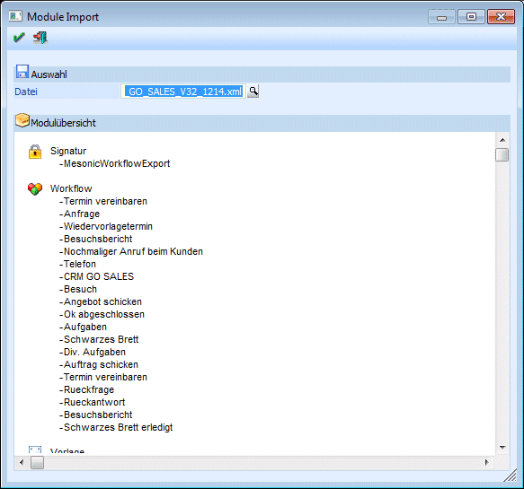
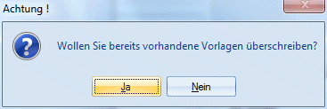
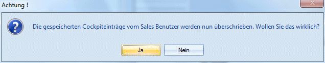
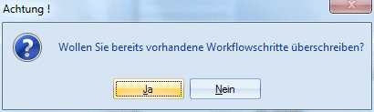

Zur Verwendung der WinLine CRM Go!-Produkte müssen die entsprechenden XML-Pakete importiert werden.
Die Installation des Paketes erfolgt im Programm WinLine START über den Menüpunkt
1 Datei
1 Module installieren

Zuerst muss im Feld "Datei" die Datei ausgewählt werden, die importiert werden soll. Im Normalfall handelt es sich dabei um eine XML-Datei. Durch Drücken der F9-Taste kann nach der entsprechenden Datei (z.B. CRM_GO_SALES_V32_1214.XML) gesucht werden.
Wurde eine Datei ausgewählt und übernommen, wird im unteren Bereich der Inhalt der Datei angezeigt.

Durch Anklicken des OK-Buttons werden alle Daten der Importdatei entsprechend übernommen und die entsprechenden Bereiche automatisch angelegt (Workflows, Reports, Cockpit etc.).
Achtung:
Im Falle dass ein CRM Go!-Paket bereits einmal installiert wurde und ein weiterer Import durchgeführt wird, erfolgt eine Anfrage ob bereits bestehende Vorlagen überschrieben werden sollen oder nicht.

Weiter in ähnlicher Form die Abfrage betr. dem Cockpit sowie den Workflows.

